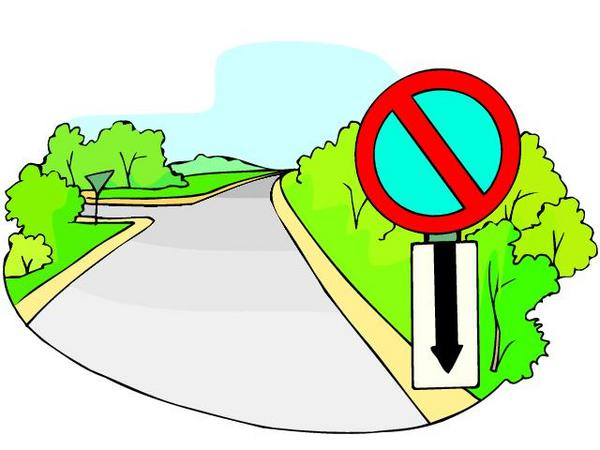

<map name="map">
<!-- #$-:Image map file created by GIMP Image Map plug-in -->
<!-- #$-:GIMP Image Map plug-in by Maurits Rijk -->
<!-- #$-:Please do not edit lines starting with "#$" -->
<!-- #$VERSION:2.3 -->
<!-- #$AUTHOR:Henry -->
<area shape="poly" coords="275,173,198,202,403,393,403,391,407,392"  nohref="nohref" />
<area shape="poly" coords="88,203,31,323,151,393,399,393,199,201,202,203" href="https://www.teendriversource.org/teen-crash-risks-prevention/distracted-driving/cell-phones" />
</map>
